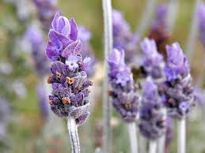

La lavanda es una planta aromática muy apreciada por su agradable aroma y propiedades relajantes. Se utiliza en aceites esenciales, cosmética y como planta ornamental.
Simbolismo: La lavanda puede simbolizar pureza, devoción, serenidad, gracia y calma.
Historia: En el Antiguo Egipto, la lavanda se usaba en el proceso de momificación, y en la Edad Media se usaba para protegerse de la peste.
Usos culinarios: La lavanda se puede usar en la cocina para dar sabor a postres y otros platos.
